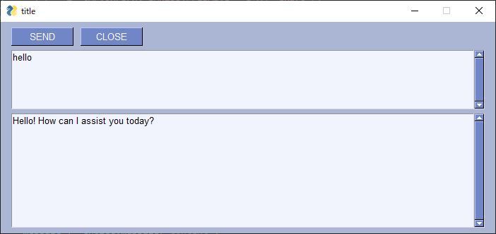

PythonでCHAT GPTと会話するAPIキーのソースコードの紹介です。 まずはCHAT GPTにログインしAPIキーとなるものを取得して下さい。sk-...と始まるものとなります。 これをダウンロードした「chatgpt_2023.py」の7行目の以下の行に貼り付けて下さい。 api_key = 'sk-....'
実行方法. python chatgpt_2023.py source code https://github.com/su5filed/chatgpt_python/blob/main/chatgpt_2023.py ver Python 3.11.4 参考:GPT-4のAPIが使えない場合は？ 「The model: `gpt-4` does not exist」というメッセージが出る場合 OpenAIのPlaygroundにアクセスし、Chatモードでモデル項目を選択して GPT-4が表示されていない場合は使えないみたいです。